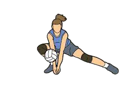
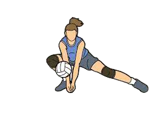

Istoria de volei Începe în Statele Unite la sfârșitul secolului al XIX-lea.
Creatorul său a fost William G. Morgan, instructor de sport la Young Christian Association (YMCA pentru acronimul său în engleză, Asociația Creștină a Tinerilor).
Obiectivul lui Morgan a fost dezvoltarea unui sport care să amestece elementele altor discipline (baschet, tenis, handbal, printre altele), pentru a crea o nouă disciplină care nu era atât de solicitantă în ceea ce privește rezistența fizică și care scădea contactul fizic între participanți.
• 1895: William G. Morgan a creat, în SUA, jocul de volei denumit iniţial „Mintonette”.
• 1896: Denumirea de „Mintonette” jocului a fost schimbată în „Volley Ball”.
• 1900: a fost realizată o minge special pentru volei.
• 1900: prima ţară din afara SUA care a adoptat voleiul a fost Canada.
• 1908: voleiul ajunge în Japonia.
• 1912: numărul de jucători din fiecare echipă a fost stabilit la şase şi s-a decis ca jucătorii să se rotească înaintea serviciului.
• 1914: secretarul YMCA War Office, George Fisher, a inclus voleiul în programele de reconfortare şi educaţie ale Forţelor Armate Americane.
• 1915: numărul jucătorilor în teren redevine variabil putând fi de la doi la şase pentru fiecare echipă. În Europa voleiul ajunge adus de soldaţii americani care au luptat în primul Război Mondial. Popularitatea sa a crescut rapid, dar jocul a prins rădăcini în special în ţările din Estul Europei unde climatul rece a făcut deosebit de atractive sporturile de sală. Începutul primului război mondial a introdus voleiul în Africa (Egipt).
• 1916: în Philippines, a fost introdus un stil ofensiv prin care se pasa mingea cu o traiectorie înaltă pentru a fi lovită de alt jucător.
• 1917: s-a trecut de la 21 la 15 puncte pentru câştigarea unui set.
• 1918: numărul Jucătorilor pe echipă a fost restabilit la şase.
• 1919: au fost introduşi 16000 de jucători de volei în Forţele Expediţionare Americane şi în trupele aliate. Acest lucru a fost un stimul al dezvoltării voleiului în afara SUA.
• 1920: au fost instituite: regula celor trei lovituri pentru o echipă şi atacul din linia a doua.
• 1923: o echipă trebuia să fie alcătuită din 6 jucători pe teren şi 12 rezerve oficiale iar fiecare jucător trebuia să aibă un tricou numerotat diferit.
• 1924: crearea Federaţiei de Volei în Cehoslovacia (prima în Europa).
• 1925: s-a stabilit să fie admise două time-outs-uri pe set pentru fiecare echipă.
• 1927: ia naştere Federaţia Japoneză de Volei şi se organizează competiţii cu echipe formate din 9 jucători, sistem adoptat şi de China.
• 1930: s-a jucat pentru prima dată volei pe plajă cu doi jucători.
• 1933: primul campionat naţional de volei s-a ţinut în URSS unde erau deja 400000 jucători.
• 1934: s-a creat o „Comisie Tehnică de Volei” în cadrul „Asociaţiei Internaţionale a Sporturilor cu Mingea Jucate cu Mâna”.
• 1935: atingerea fileului este considerată greşeală.
• 1938: Cehii au perfecţionat blocajul care a fost oficial introdus în regulament sub denumirea de „o contraacţiune la fileu de unul sau doi jucători alăturaţi”. Timp de aproximativ 20 ani blocajul fusese folosit în joc, dar nu era specificat în regulamente. Cehii, urmaţi la scurt timp de ruşi, au fost primii care au atribuit o importanţă decisivă noii metode care facilita sarcina ingrată de apărare în volei.
• 1940: William G. Morgan, creatorul jocului de volei a murit la vîrsta de 68 de ani după ce a urmărit cu entuziasm evoluţia jocului pe care la creat.
• 1942: mingea putea fi jucată cu orice parte a corpului de la genunchi în sus.
• 1945: primele mărci poştale cu subiect din volei au fost emise în România.
• 1947: s-au armonizat regulile de joc americane şi europene. Terenul trebuia să măsoare 9×18 m, iar înălţimea fileului era 2,43 m pentru bărbaţi şi 2,24 m pentru femei. În Asia regulile erau diferite: terenul măsura 21,35 x 10,67 m iar fileul era la 2,28 m pentru bărbaţi şi 2,13 m pentru femei.
• 1947: s-a înfiinţat oficial „Federaţia Internaţională de Volley Ball” (FIVB), având ca prim preşedinte pe francezul Paul Libaud, la Congresul Constitutiv din 18 – 20 aprilie, în Franţa la Paris, la care au participat 14 federaţii naţionale.
• 1948: la Roma s-a ţinut primul Campionat European de Volei câştigat de Cehoslovacia. După război regulile au fost rescrise şi clarificate pentru a face interpretarea mai uşoară. În special s-a dat o mai bună definiţie blocajului şi serviciul a fost limitat la treimea din dreapta a liniei de fund a terenului.
• 1948: s-a ţinut primul turneu de volei pe plajă cu doi jucători.
• 1949: primul Campionat Mondial de volei masculin s-a ţinut la Praga în Cehoslovacia câştigat de URSS.
• 1951: voleiul era jucat de peste 50 milioane de oameni în peste 60 de ţări.
• 1952: primul Campionat Mondial de volei feminin s-a ţinut la Moscova în URSS şi a fost câştigat de URSS.
• 1956: a fost publicat primul număr oficial al Buletinului FIVB. La Paris s-a ţinut primul Campionat într-adevăr mondial la care au participat 24 echipe masculine din 4 continente. Cehoslovacia a câştigat la bărbaţi şi URSS la femei.
• 1957: s-a luat în considerare introducerea celui de al doilea arbitru, durata time-outs-urilor a fost limitată la un minut şi 30 secunde. În timpul celei de-a 53-a sesiuni a Comitetului Olimpic Internaţional ţinută la Sofia s-a jucat un turneu demonstrativ de volei şi Comitetul Olimpic a stabilit ca jocul de volei să fie introdus ca Joc de Echipă Olimpic la Olimpiada a XVIII-a de la Tokyo din 1964.
• 1959: Federaţia Internaţională de Sporturi Universitare a introdus primele Jocuri Universitare la Torino în Italia. Jocul de volei era una din cele opt competiţii introduse.
• 1964: voleiul a fost introdus ca Joc de Echipă Olimpic la Olimpiada de la Tokyo.
• 1964: japonezii au folosit la Olimpiada de la Tokyo o minge care consta dintr-o carcasă din cauciuc pe care erau lipite bucăţi de piele. O construcţie similară a mingii de volei se utilizează şi în prezent.
• 1968: Congresul din Mexic a recomandat introducerea antenelor pentru a facilita decizia arbitrilor asupra mingilor care au depăşit liniile laterale.
• 1969: a luat fiinţă Comisia Antrenorilor.
• 1971: primele cursuri de antrenori ale FIVB au fost ţinute în Japonia şi Egipt. A luat fiinţă Comisia Medicală a FIVB.
• 1974: la Congresul FIVB din Mexico City s-a decis aplicarea după 1976 a două modificări: antenele laterale trebuiau mutate la limitele laterale ale terenului, iar după blocaj se admiteau trei atingeri ale mingiei. Campionatele Mondiale de Volei din Mexic au fost televizate şi s-au putut vedea în direct în Japonia.
• 1980: Congresul al 17-lea al FIVB a adoptat regulile jocului în trei limbi: franceză, engleză şi spaniolă.
• 1984: a fost ales ca preşedinte al FIVB mexicanul Rubén Acosta Hernandez, iar sediul FIVB s-a mutat de la Paris, Franţa, la Lausanne, Elveţia şi a fost intensificată politica de promovare a voleiului în bazele sportive din toată lumea.
• 1988: FIVB a inaugurat noul sediu de la Lausanne.
• 1995: jocul de volei a împlinit 100 de ani. Evenimentul a fost comemorat în toată lumea prin ceremonii, turnee, emitere de timbre. FIVB a sărbătorit evenimentul organizând ciclul de evenimente „100 ani de volei în 100 de zile” constând dintr-o serie de manifestări şi editarea unei magnifice cărţi cu titlul „100 de ani de legătură globală”. A apărut site-ul http://www.voleyball.com
• 1996: voleiul pe plajă cu doi jucători a fost introdus ca Sport Olimpic.
• 2000: s-a trecut de la 15 la 25 puncte pentru câştigarea unui set. S-a acordat titlul de cel mai bun antrenor de volei al secolului XX lui Yasutaka Matsudaira din Japonia la volei masculin pentru perioada 1964 – 1974 şi la volei feminin lui Eugenio George din Cuba pentru perioada 1990 – 2000.
• 2001: FIVB are afiliate 218 federaţii naţionale.
Asta e esența sportului: să mergi până la propriile limite și să vezi dacă ești în stare să treci dincolo de ele.
- Pascal Bruckner
Viteza
Pasiune
Energie
Oriunde


 
